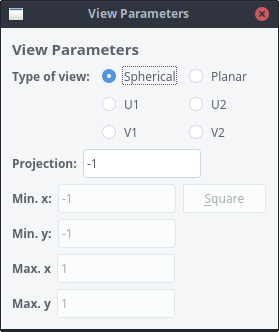
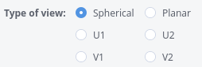

Polynomial Planar Phase Portraits
Polynomial Planar Phase Portraits
THE PLOT-VIEW WINDOW

In this window you can change the view of phase portrait. You can choose a projection of the Poincare sphere or Poincare-Lyapunov sphere to the screen, a planar view that can be used to study the finite region,
or you can display one of the four charts at infinity.
Detailed information on the charts at infinity (U1, U2, V1, V2) can be found
here.
-
The choices

allow you to make a choice between the different views. With a spherical view, you get a projection of
the Poincare sphere (or Poincare-Lyapunov sphere) to a disc. In this view, infinity is shown as a circle.
In the U1 chart, infinity is shown as a vertical line in the middle of the plot window. To the right of
this line at infinity, the phase portrait in the U1 chart is drawn. The left portion of the plot window is used
to display the V1' chart, which has some symmetry w.r.t. the V1 chart.
Similarly, in the V1 chart, infinity is shown as a vertical line in the middle of the plot window, to the
right the V1 chart is drawn and to the left the U1' chart.
In the U2 chart, infinity is shown as a horizontal line in the middle of the plot window. On top of this
line the phase portrait in the U2 chart is drawn. The bottom portion of the plot window is used to display the
V2' chart, which has some symmetry w.r.t. the V2 chart.
Similarly, in the V2 chart, infinity is shown as a horizontal line in the middle of the plot window, on
top of it the V2 chart, and below this line the U2' chart.
In the Planar view, you get a rectangular portion of the finite x-y plane. Information at infinity is
not shown.
-
In case of a spherical view, you can adapt the field : it
contains the (negative) z coordinate
in (0,0,z) of the projection point from which you pass the points
from the Poincare Sphere to the Poincare Disc. A very high value (in modulus)
will mean an almost parallel projection. A value close to zero will collapse
the picture close to the origin and will give a better vision of the behaviour
close to infinity. By default, the number is -1.
-
In all other cases, you can enter the fields , ,
and to describe the rectangular region you want to display.
-
To make it easy to use square regions, it suffices to enter one coordinate in the
field and press the button
to complete the other coordinates accordingly.
After you make your choice, you have to click somewhere in the Plot window in
order to execute the changes.
 Back to the main page
Back to the main page
 Back to the windows page
Back to the windows page